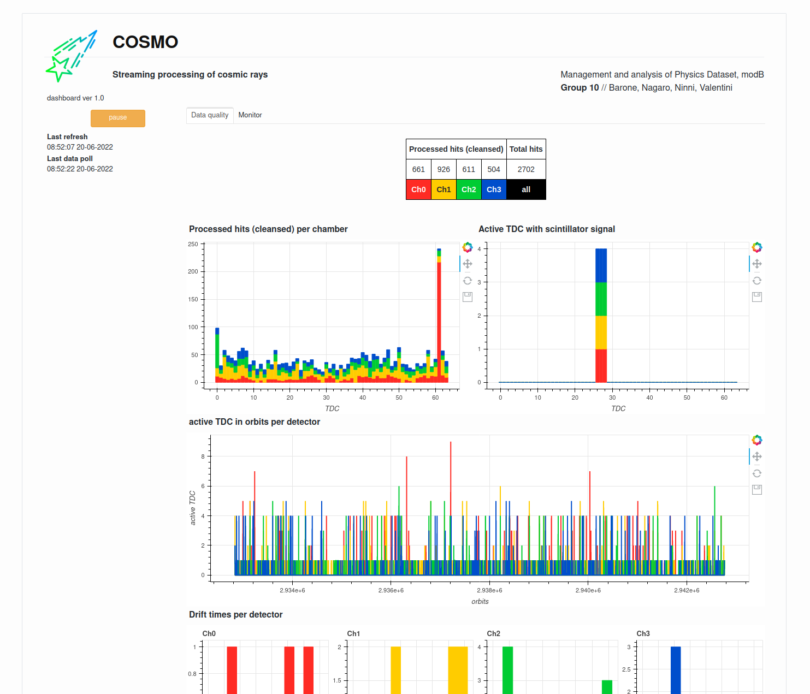

Streaming processing of cosmic rays
Management and analysis of Physics Dataset, modB
Group 10 // Barone, Nagaro, Ninni, Valentini
This is our final project for Management and Analysis of Physics Dataset (module B). In this work, we perform streaming processing of data collected by a particle physics detector, publishing the data quality analysis to a dashboard for live monitoring. The workflow is summarized in the following schema:

- Spark: compute the statistics about the live data
- Kafka: manage the data IO & deliver the statistics
- Bokeh: process the statistics & create a dashboard
In order to manage all the involved entities, we provide a simple bash interface to manage the cluster routines: COSMO.
The dataset comes from muon detectors that have been built and installed in Legnaro INFN Laboratories.
A video demo is available here, although it is NOT indicative of the final performance of our delivery. Sometimes the data buffer starts before the actual Spark processing & data accumulates, so Spark has to work more in order to catch up with the buffer. The stream stabilizes usually within 2 minutes. The final dashboard looks like this:

COSMO
COSMO is an utility to manage the execution of remote streaming analysis. It is coded in bash, and it must be installed on the master node.
COSMO provides access to functions (which act on a single entity of our framework), as well as routines (which are automatized collections of functions). Functions are more development-oriented, for debug purpose; we suggest to use routines. The standard routines are:
| routine | action |
|---|---|
cosmo init |
start Spark & Kafka clusters |
cosmo run |
execute the streaming analysis |
cosmo halt |
stop the streaming analysis |
cosmo dismiss |
stop clusters |
COSMO loads the execution parameters from a .ini configuration file, which must be provided inside its own directory in ./config/*. We provide two default setups: config/localhost and config/cloud. The latter is the one we configured explicitly for Cloud Veneto. Nevertheless, even the localhost preset must be edited depending on your environment.
Setup
Make sure you have installed the Python requirements (requirements.txt). You must have a working Spark (3.2.1) & Kafka (3.2.0) cluster.
For local execution you have to download the dataset from the bucket mapd-minidt-stream. To do this, we provide an automatic Python script in data/local-download.py. To make it work, you must provide the access credentials in a json file. Check out the README file inside the data directory for more informations.
To install Cayde, please insert the following lines in .bashrc:
COSMO_CONFIG_PATH='config/localhost'
cosmo() {
`YOUR_ABSOLUTE_PATH`/cosmo.sh "$@"
}
export COSMO_CONFIG_PATH
export -f cosmoreplacing YOUR_ABSOLUTE_PATH with the actual absolute path of your installation. The variable COSMO_CONFIG_PATH specifies which configuration files to use.
Execution
To start the server
cosmo init
cosmo runWe recommend to use a ssh tunnel forwading to reach the following interfaces:
| port | object |
|---|---|
| 8080 | Spark master UI |
| 4040 | Application UI |
| 5006 | dashboard |
| 9002 | Kafka socket |
| 7077 | Spark master socket |
To stop the server
cosmo halt
cosmo dismissIf something does not work, then debugging is needed …
Cloud Veneto
Login to the MAPD-B_Gr10-1 machine, with user cosmo. Then invoke cosmo as described above.
The logo above is provided under Flaticon License, Cosmos icons created by Ridho Imam Prayogi - Flaticon.
MAPD (module B) project
AY 2021/2022 University of Padua